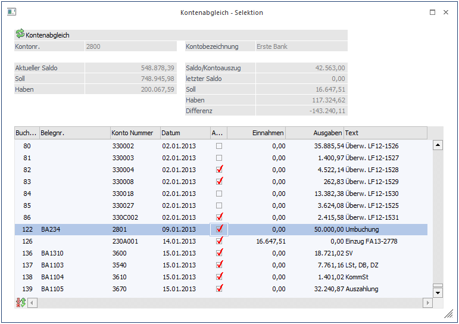
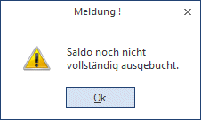
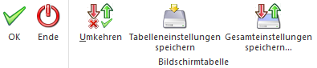

Mit der Funktion Kontenabgleich sind Sie in der Lage, alle Journalzeilen eines bestimmten Kontos mit den Zeilen Ihres Bankauszuges abzugleichen.
Diese Funktion wird im Menüpunkt
1 Buchen
1 Kontenabgleich
Aufgerufen. Beim Bestätigen der Maske Kontenabgleich wird Ihnen die Selektion angezeigt.

Im Kopfteil des Bildschirms sehen Sie die aktuellen Werte, die sich nach jeder gekennzeichneten Buchungszeile entsprechend verändern.
Sind alle Zeilen abgeglichen, müsste das Feld Differenz auf Null stehen.
Es erfolgt eine Hinweismeldung, wenn der Differenzbetrag nicht null ist. Die vorgenommenen Änderungen werden nicht gespeichert.

Wird ein Differenzbetrag angezeigt, so wurden evtl. nicht alle Zeilen des Bankbeleges gebucht. Fehlende Buchungen können durch das Anklicken des Buchen-Buttons (Fenster Kontenabgleich) direkt in der Buchungserfassung der WinLine nacherfasst werden.
Oder Sie haben Journalzeilen in Ihrer Buchhaltung, die nicht dem Bankauszug entsprechen. In diesem Fall sollten Sie überprüfen, wodurch es zu dieser Differenz kommen konnte.
Buttons

Ø OK
Nach Bestätigung des OK-Buttons oder mit F5 werden die vorgenommenen Einstellungen gespeichert.
Ø Ende
Durch Anklicken des Ende-Buttons bzw. durch Drücken der ESC-Taste wird das Fenster geschlossen. Nicht gespeicherte Änderungen gehen verloren.
Ø Umkehren
Durch Anklicken des Umkehr-Buttons wird die Selektion ins Gegenteil verkehrt: alle aktiven Checkboxen werden inaktiv gesetzt und alle inaktiven Checkboxen werden aktiv gesetzt.
Ø Tabelleneinstellungen speichern
Die Spalten einer Tabelle können grundsätzlich an beliebige Positionen verschoben, bzw. in der Breite entsprechend angepasst werden. Durch Anwahl des Buttons "Tabelleneinstellungen speichern" werden die Einstellungen benutzerspezifisch gespeichert und bei dem nächsten Aufruf des Programmpunktes wieder vorgeschlagen.
Ø Gesamteinstellungen speichern
Im Gegensatz zu "Tabelleneinstellungen speichern" können mit "Gesamteinstellungen speichern" mehrere Tabellenaufbauten gespeichert und nach Wunsch geladen werden. Zusätzlich werden Sonderfunktionen der Tabelle (z.B. "Spalte gruppieren") ebenfalls bei der Speicherung bedacht.